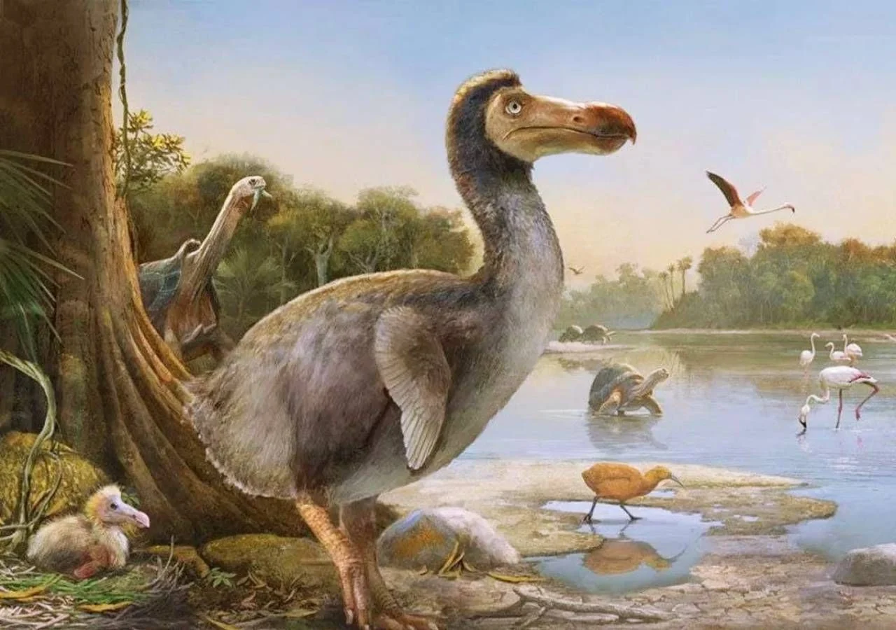

O Dodô: Uma História de Extinção
O dodô (Raphus cucullatus) foi uma ave não voadora endêmica da ilha Maurício,
no Oceano Índico, que se tornou um dos símbolos mais reconhecidos da extinção causada pela atividade humana.
Esta ave peculiar desapareceu completamente no final do século XVII, apenas algumas décadas após o primeiro contato com os colonizadores europeus.
Características Físicas
O dodô era uma ave robusta que podia chegar a medir cerca de um metro de altura e pesar entre 10 a 18 quilogramas.
Possuía uma plumagem acinzentada, bico grande e curvado de cor amarela com ponta preta, e asas atrofiadas que não lhe permitiam voar.
Suas patas eram amareladas e relativamente curtas para o tamanho do corpo.
A cauda era pequena e adornada com algumas penas curvadas.
Representação de um Dodô com uma qualidade de imagem superior
Habitat e Comportamento
Vivendo exclusivamente nas florestas da ilha Maurício, o dodô havia evoluído num ambiente sem predadores naturais terrestres.
Esta ausência de ameaças levou a espécie a perder a capacidade de voo e a desenvolver comportamentos
que se revelariam fatais quando confrontados com a presença humana.
As aves eram terrestres, alimentando-se de frutos, sementes e possivelmente pequenos animais que encontravam no solo da floresta.

Mais info clicar aqui!
Processo de Extinção
A extinção do dodô foi resultado de múltiplos fatores introduzidos pelos humanos. Os marinheiros
e colonizadores holandeses que chegaram à ilha a partir de 1598 caçavam as aves para alimentação,
aproveitando sua docilidade e incapacidade de fuga.
Simultaneamente, os animais domésticos e invasores trazidos pelos navios - como porcos, cães, gatos e ratos
- destruíam os ninhos e competiam por recursos alimentares.
A desflorestação para agricultura e assentamentos
humanos também contribuiu significativamente para a destruição do habitat natural do dodô.
A combinação destes fatores levou ao desaparecimento completo da espécie em apenas 65 anos após o primeiro contato europeu.
Mais info clicar aqui!
Legado e Simbolismo
Atualmente, o dodô tornou-se um símbolo poderoso da conservação ambiental e das consequências da interferência humana descontrolada nos ecossistemas naturais.
A expressão "morto como um dodô" entrou no vocabulário comum para descrever algo completamente extinto ou obsoleto.
O dodô está presente no brasão de armas de Maurício e inspirou inúmeras obras de ficção, sendo talvez mais famoso pela sua aparição em "Alice no País das Maravilhas" de Lewis Carroll.
Museus ao redor do mundo preservam os poucos restos mortais e reconstruções da espécie, servindo como lembrança permanente da importância da preservação da biodiversidade.
Importância Científica
O estudo do dodô e sua extinção forneceu insights valiosos sobre os impactos das espécies invasoras e da perda de habitat.
A história desta ave continua a ser uma ferramenta educativa crucial para sensibilizar sobre a fragilidade dos ecossistemas insulares e a necessidade de medidas de conservação eficazes para proteger espécies ameaçadas contemporâneas.